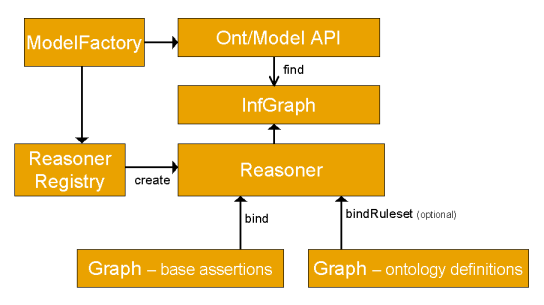
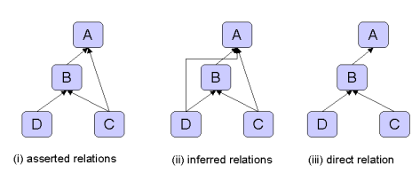
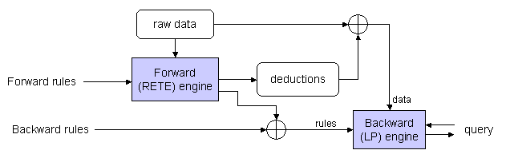

This section of the documentation describes the current support for inference available within Jena2. It includes an outline of the general inference API, together with details of the specific rule engines and configurations for RDFS and OWL inference supplied with Jena2.
Not all of the fine details of the API are covered here: refer to the Jena2 Javadoc to get the full details of the capabilities of the API.
Note that this is a preliminary version of this document, some errors or inconsistencies are possible, and feedback to the author (via the jena-dev support list) is welcomed.
The Jena2 inference subsystem is designed to allow a range of inference engines or reasoners to be plugged into Jena. Such engines are used to derive additional RDF assertions which are entailed from some base RDF together with any optional ontology information and the axioms and rules associated with the reasoner. The primary use of this mechanism is to support the use of languages such as RDFS and OWL which allow additional facts to be inferred from instance data and class descriptions. However, the machinery is designed to be quite general and, in particular, it includes a generic rule engine that can be used for many RDF processing or transformation tasks.
We will try to use the term inference to refer to the abstract process of deriving additional information and the term reasoner to refer to a specific code object that performs this task. Such usage is arbitrary and if we slip into using equivalent terms like reasoning and inference engine please forgive us.
The overall structure of the inference machinery is illustrated below.

Applications normally access the inference machinery by using the ModelFactory
to associate a data set with some reasoner to create a new Model. Queries to
the created model will return not only those statements that were present in
the original data but also additional statements than can be derived from the
data using the rules or other inference mechanisms implemented by the reasoner.
As illustrated the inference machinery is actually implemented at the level
of the Graph SPI, so that any of of the different Model interfaces can be constructed
around an inference Graph. In particular, the Ontology
API provides convenient ways to link appropriate reasoners into the OntModels
that it constructs. As part of the general RDF API we also provide an InfModel,
this is an extension to the normal Model interface that provides
additional control and access to an underlying inference graph.
The reasoner API supports the notion of specializing a reasoner by binding
it to a set of schema or ontology data using the bindSchema call.
The specialized reasoner can then be attached to different sets of instance
data using bind calls. In situations where the same schema information
is to be used multiple times with different sets of instance data then this
technique allows for some reuse of inferences across the different uses of the
schema. In RDF there is no strong separation between schema (aka Ontology aka
tbox) data and instance (aka abox) data and so any data, whether class or instance
related, can be included in either the bind or bindSchema
calls - the names are suggestive rather than restrictive.
To keep the design as open ended as possible Jena2 also includes a ReasonerRegistry.
This is a static class though which the set of reasoners currently available
can be examined. It is possible to register new reasoner types and to dynamically
search for reasoners of a given type. The ReasonerRegistry also
provides convenient access to prebuilt instances of the main supplied reasoners.
Included in the Jena distribution are a number of predefined reasoners:
rdfs:subPropertyOf and rdfs:subClassOf.[index]
For each type of reasoner there is a factory class (which conforms to the interface
ReasonerFactory)
an instance of which can be used to create instances of the associated
Reasoner.
The factory instances can be located by going directly to a known factory class
and using the static theInstance() method or by retrieval from
a global ReasonerRegistry
which stores factory instances indexed by URI assigned to the reasoner.
In addition, there are convenience methods on the ReasonerRegistry
for locating a prebuilt instance of each of the main reasoners (getTransitiveReasoner,
getRDFSReasoner, getOWLReasoner, getRDFSSimpleReasoner).
Note that the use of factory objects for constructing reasoners is to simplify the design and extension of the registry service. Once you have a reasoner instnace, the same instance can reuse multiple times by binding it to different datasets, without risk of interference - there is no need to create a new reasoner instance each time.
If working with the Ontology API it is not always necessary to explicitly locate a reasoner. The prebuilt instances of OntModelSpec provide easy access to the appropriate reasoners to use for different Ontology configurations.
Similarly, if all you want is a plain RDF Mode with RDFS inference included
then the convenience methods ModelFactory.createRDFSModel can be
used.
The behaviour of many of the reasoners can be configured. To allow arbitrary
configuration information to be passed to reasoners we use RDF to encode the
configuration information. The ReasonerFactory.create method can
be passed a Jena Resource object, the properties of that object
will be used to configure the created reasoner.
To simplify the code required for simple cases we also provide a direct Java
method to set a single configuration parameter, Reasoner.setParameter.
The parameter being set is identified by the corresponding configuration property.
For the built in reasoners the available configuration parameters are described
below and are predefined in the ReasonerVocabulary
class.
The parameter value can normally be a String or a structured value. For example, to set a boolean value one can use the strings "true" or "false", or in Java use the Boolean object or in RDF use an instance of xsd:boolean.
Once you have an instance of a reasoner it can then be attached to a set of RDF data to create an inference model. This can either be done by putting all the RDF data into one Model or by separating into two components - schema and instance data. For some external reasoners a hard separation may be required. For all of the built in reasoners the separation is arbitrary. The prime value of this separation is the allow some deductions from one set of data (typically some schema definitions) to be efficiently applied to several subsidiary sets of data (typically sets of instance data).
If you want to specialize the reasoner by partially-applying to a set schema
data use the Reasoner.bindSchema method which returns a new, specialized,
reasoner.
To bind the reasoner to the final data set to create an inference model that
can be queried see the ModelFactory
methods, particularly ModelFactory.createInfModel.
Finally, having created a inference model then any API operations which access RDF statements will be able to access additional statements which are entailed from the bound data by means of the reasoner. Depending on the reasoner these additional virtual statements may all be precomputed the first time the model is touched, may be dynamically recomputed each time or may be computed on-demand but cached.
The reasoners can be described using RDF metadata which can be searched to
locate reasoners with appropriate properties. The calls Reasoner.getCapabilities
and Reasoner.supportsProperty are used to access this descriptive
metadata.
[API index] [main index]
These initial examples are not designed to illustrate the power of the reasoners but to illustrate the code required to set one up.
Let us first create a Jena model containing the statements that some property "p" is a subproperty of another property "q" and that we have a resource "a" with value "foo" for "p". This could be done by writing an RDF/XML or N3 file and reading that in but we have chosen to use the RDF API:
String NS = "urn:x-hp-jena:eg/";
// Build a trivial example data set
Model rdfsExample = ModelFactory.createDefaultModel();
Property p = rdfsExample.createProperty(NS, "p");
Property q = rdfsExample.createProperty(NS, "q");
rdfsExample.add(p, RDFS.subPropertyOf, q);
rdfsExample.createResource(NS+"a").addProperty(p, "foo");
Now we can create an inference model which performs RDFS inference over this data by using:
InfModel inf = ModelFactory.createRDFSModel(rdfsExample); // [1]
We can then check that resulting model shows that "a" also has property "q" of value "foo" by virtue of the subPropertyOf entailment:
Resource a = inf.getResource(NS+"a");
System.out.println("Statement: " + a.getProperty(q));
Which prints the output:
Statement: [urn:x-hp-jena:eg/a, urn:x-hp-jena:eg/q, Literal]
Alternatively we could have created an empty inference model and then added in the statements directly to that model.
If we wanted to use a different reasoner which is not available as a convenience method or wanted to configure one we would change line [1]. For example, to create the same set up manually we could replace [1] by:
Reasoner reasoner = RDFSRuleReasonerFactory.theInstance().create(null);
InfModel inf = ModelFactory.createInfModel(reasoner, rdfsExample);
The purpose of creating a new reasoner instance like this would be to enable configuration parameters to be set. For example, if we were to listStatements on inf Model we would see that it also "includes" all the RDFS axioms, of which there are quite a lot. It is sometimes useful to suppress these and only see the "interesting" entailments. This can be done by setting the processing level parameter by creating a description of a new reasoner configuration and passing that to the factory method:
Resource config = ModelFactory.createDefaultModel()
.createResource()
.addProperty(ReasonerVocabulary.PROPsetRDFSLevel, "simple");
Reasoner reasoner = RDFSRuleReasonerFactory.theInstance().create(config);
InfModel inf = ModelFactory.createInfModel(reasoner, rdfsExample);
This is a rather long winded way of setting a single parameter, though it can be useful in the cases where you want to store this sort of configuration information in a separate (RDF) configuration file. For hardwired uses the following alternative is often simpler:
Reasoner reasoner = RDFSRuleReasonerFactory.theInstance().create(null);
reasoner.setParameter(ReasonerVocabulary.PROPsetRDFSLevel,
ReasonerVocabulary.RDFS_SIMPLE);
InfModel inf = ModelFactory.createInfModel(reasoner, rdfsExample);
Finally, supposing you have a more complex set of schema information, defined in a Model called schema, and you want to apply this schema to several sets of instance data without redoing too many of the same intermediate deductions. This can be done by using the SPI level methods:
Reasoner boundReasoner = reasoner.bindSchema(schema);
InfModel inf = ModelFactory.createInfModel(boundReasoner, data);
This creates an new reasoner, independent from the original, which contains the schema data. Any queries to an InfModel created using the boundReasoner will see the schema statements, the data statements and any statements entailed from the combination of the two.
[API index] [main index]
For many applications one simply creates a model incorporating some inference
step, using the ModelFactory methods, and then just works within
the standard Jena Model API to access the entailed statements. However, sometimes
it is necessary to gain more control over the processing or to access additional
reasoner features not available as virtual triples.
The most common reasoner operation which can't be exposed through additional triples in the inference model is that of validation. Typically the ontology languages used with the semantic web allow constraints to be expressed, the validation interface is used to detect when such constraints are violated by some data set.
A simple but typical example is that of datatype ranges in RDFS. RDFS allows us to specify the range of a property as lying within the value space of some datatype. If an RDF statement asserts an object value for that property which lies outside the given value space there is an inconsistency.
To test for inconsistencies with a data set using a reasoner we use the InfModel.validate()
interface. This performs a global check across the schema and instance data
looking for inconsistencies. The resulting a ValidityReport object
comprises a simple pass/fail flag (ValidityReport.isValid()) together
with a list of specific reports (instances of the ValidityReport.Report
interface) which detail any detected inconsistencies. At a minimum the individual
reports should be printable descriptions of the problem but they can also contain
an arbitrary reasoner-specific object which can be used to pass additional information
which can be used for programmatic handling of the violations.
For example, to check a data set and list any problems one could do something like:
Model data = ModelLoader.loadModel(fname);
InfModel infmodel = ModelFactory.createRDFSModel(data);
ValidityReport validity = infmodel.validate();
if (validity.isValid()) {
System.out.println("OK");
} else {
System.out.println("Conflicts");
for (Iterator i = validity.getReports(); i.hasNext(); ) {
System.out.println(" - " + i.next());
}
}
The file testing/reasoners/rdfs/dttest2.nt declares a property
bar with range xsd:integer and attaches a bar
value to some resource with the value "25.5"^^xsd:decimal.
If we run the above sample code on this file we see:
Conflicts
- Error (dtRange): Property http://www.hpl.hp.com/semweb/2003/eg#bar has a typed range Datatype[http://www.w3.org/2001/XMLSchema#integer -> class java.math.BigInteger]that is not compatible with 25.5:http://www.w3.org/2001/XMLSchema#decimal
Whereas the file testing/reasoners/rdfs/dttest3.nt uses the value
"25"^^xsd:decimal instead, which is a valid integer and so passes.
Note that the individual validation records can include warnings as well as
errors. A warning does not affect the overall isValid() status
but may indicate some issue the application may wish to be aware of. For example,
it would be possible to develop a modification to the RDFS reasoner which warned
about use of a property on a resource that is not explicitly declared to have
the type of the domain of the property.
The default API supports accessing all entailed information at the level of individual triples. This is surprisingly flexible but there are queries which cannot be easily supported this way. The first such is when the query needs to make reference to an expression which is not already present in the data. For example, in description logic systems it is often possible to ask if there are any instances of some class expression. Whereas using the triple-based approch we can only ask if there are any instances of some class already defined (can be defined by a bNode rather than named).
To overcome this limitation the InfModel API supports a notion
of "posit", that is a set of assertions which can be used to temporarily
declare new information such as the definition of some class expresssion which
can then be referenced an associated listStatements comment. With
the current reasoners this is an expensive operation, involving the temporary
creation of an entire new model with the additional posits added and all inference
has to start again from scratch. Thus it is worth considering preloading your
data with expressions you might need to query over. However, for some external
reasoners, especially description logic reasoners, we anticpate restricted uses
of this form of listStatement will be important.
The second type of operation that is not obviously convenient at the triple level involves distinguishing between direct and indirect relationships. If a relation is transitive, for example rdfs:subClassOf, then we can define the notion of the minimal or direct form of the relationship from which all other values of the relation can be derived by transitive closure.

Normally, when an InfGraph is queried for a transitive relation the results
returned show the inferrred relations, i.e. the full transitive closure (all
the links (ii) in the illustration). However, in some cases, such when as building
a hierarchical UI widget to represent the graph, it is more convenient to only
see the direct relations (iii). This is achieved by defining special direct
aliases for those relations for which can be queried this way. For the built
in reasoners this functionality is available for rdfs:subClassOf
and rdfs:subPropertyOf and the direct aliases for these are defined
in ReasonerVocabulary.
Typically the easiest way to work with such indirect and direct relations is to use use the Ontology API which hides the details of this property aliases.
It is sometimes useful to be able to trace where an inferred statement was
generated from. This is achieved using the InfModel.getDerivation(Statement)
method. This returns a iterator over a set Derviation
objects through which a brief description of the source of the derivation can
be obtained. Typically understanding this involves tracing the sources for other
statements which were used in this derivation and the Derivation.PrintTrace
method is used to do this recursively.
The general form of the Derivation objects is quite abstract but in the case
of the rule-based reasoners, there they have a more detailed internal structure
that can be accessed - see RuleDerivation.
Derviation information is rather expensive to compute and store. For this reason,
it is not recorded by default and InfModel.serDerivationLogging(true)
must be used to enable derivations to be recorded. This should be called before
any queries are made to the inference model.
As an illustration suppose that we have a raw data model which asserts three triples:
eg:A eg:p eg:B . eg:B eg:p eg:C . eg:C eg:p eg:D .
and suppose that we have a trivial rule set which computes the transitive closure over relation eg:p
String rules = "[rule1: (?a eg:p ?b) (?b eg:p ?c) -> (?a eg:p ?c)]";
Reasoner reasoner = new GenericRuleReasoner(Rule.parseRules(rules));
reasoner.setDerivationLogging(true);
InfModel inf = ModelFactory.createInfModel(reasoner, rawData);
Then we can query whether eg:A is related through eg:p to eg:D and list the derivation route using the following code fragment:
PrintWriter out = new PrintWriter(System.out);
for (StmtIterator i = inf.listStatements(A, p, D); i.hasNext(); ) {
Statement s = i.nextStatement();
System.out.println("Statement is " + s);
for (Iterator id = inf.getDerivation(s); id.hasNext(); ) {
Derivation deriv = (Derivation) id.next();
deriv.printTrace(out, true);
}
}
out.flush();
Which generates the output:
Statement is [urn:x-hp:eg/A, urn:x-hp:eg/p, urn:x-hp:eg/D]
Rule rule1 concluded (eg:A eg:p eg:D) <-
Fact (eg:A eg:p eg:B)
Rule rule1 concluded (eg:B eg:p eg:D) <-
Fact (eg:B eg:p eg:C)
Fact (eg:C eg:p eg:D)
From an InfModel it is easy to retrieve the original, unchanged,
data over which the model has been computed using the getRawModel()
call. This returns a model equivalent to the one used in the initial bind
call. It might not be the same Java object but it uses the same Java object
to hold the underlying graph.
Some reasoners, notably the foward chainging rule engine, store the deduced
statements in a concrete form and this set of deductions can be obtained using
the getDeductionsModel() call.
Having bound a Model into an InfModel by using a
Reasoner its content can still be changed by the normal add
and remove calls to the InfModel. Any such change
the model will usually cause all current deductions and temporary rules to be
discarded and inference will start again from scratch at the next query. Some
reasoners, such as the RETE-based forward rule engine, can work incrementally.
In the non-incremental case then the processing will not be started until a
query is made. In that way a sequence of add and removes can be undertaken without
redundant work being performed at each change. In some applications is convenient
to trigger the initial processing ahead of time to reduce the latency of the
first query. This can be achieved using the InfModel.prepare()
call. This call is not necessary in other cases, any query will automatically
trigger an internal prepare phase if one is required.
There are times when the data in a model bound into an InfModel can is changed
directly instead of through calls to the InfModel. If this occurs the result
of future queries to the InfModel are unpredicatable. To overcome this and force
the InfModel to reconsult the raw data use the InfModel.rebind()
call.
Finally, some reasoners can both intermediate and final query results between
calls. This can substantially reduce the cost of working with the inference
services but at the expense of memory usage. It is possible to force an InfModel
to discard all such cached state by using the InfModel.reset()
call. It there are any outstanding queries (i.e. StmtIterators which have not
be read to the end yet) then those will be aborted (the next hasNext() call
will return false).
When developing new reaoner configurations, especially new rule sets for the
rule engines, it is sometimes useful to be able to trace of the operations of
associated inference engine. Typically this generates too much information to
be of use and selective use of the print builtin is more effective.
Tracing is not supported by a convenience API call but, for those reasoners that support it, it can be enabled using:
reasoner.setParameter(ReasonerVocabulary.PROPtraceOn, Boolean.TRUE);
Dynamic tracing control is possible on several of the supplied InfGraph implementations
using a setTraceOn() call. If you need to make use of this see
the full javadoc.
[API index] [main index]
Jena2 includes an RDFS reasoner (RDFSRuleReasoner) which supports
almost all of the RDFS entailments described by the RDF Core working group [RDF
Semantics]. The only omissions are deliberate and are described below.
This reasoner is accessed using ModelFactory.createRDFSModel or
manually via ReasonerRegistery.getRDFSReasoner().
During the preview phases of Jena2 experimental RDFS reasoners were released, some of which are still included in the code base for now but applications should not rely on their stability or continued existence.
When configured in full mode (see below for configuration information) then the RDFS reasoner implements all RDFS entailments except for the bNode closure rules. These closure rules imply, for example, that for all triples of the form:
eg:a eg:p nnn^^datatype .
we should introduce the corresponding blank nodes:
eg:a eg:p _:anon1 . _:anon1 rdf:type datatype .
Whilst such rules are both correct and necessary to reduce RDF datatype entailment down to simple entailment they are not useful in implementation terms. In Jena simple entailment can be implemented by translating a graph containing bNodes to an equivalent query containing variables in place of the bNodes. Such a query is can directly match the literal node and the RDF API can be used to extract the datatype of the literal. The value to applications of directly seeing the addtional bNode triples, even in virtual triple form, is negligable and so this has been deliberately omitted from the reasoner.
[RDFS index] [main index]
The RDFSRuleReasoner can be configured to work at three different compliance levels:
The level can be set using the setParameter call, e.g.
reasoner.setParameter(ReasonerVocabulary.PROPsetRDFSLevel,
ReasonerVocabulary.RDFS_SIMPLE);
or by constructing an RDF configuration description and passing that to the RDFSRuleReasonerFactory e.g.
Resource config = ModelFactory.createDefaultModel()
.createResource()
.addProperty(ReasonerVocabulary.PROPsetRDFSLevel, "simple");
Reasoner reasoner = RDFSRuleReasonerFactory.theInstance().create(config);
| Parameter | Values | Description |
|
PROPsetRDFSLevel
|
"full", "default", "simple" |
Sets the RDFS processing level as described above.
|
|
PROPenableCMPScan
|
boolean |
If true forces an preprocessing pass which finds all use
of rdf:_n properties and declares them as ContainerMembershipProperties.
This is implied by setting the level parameter to "full" and
is not normally used directly.
|
|
PROPtraceOn
|
boolean |
If true switches on exhaustive tracing of rule executions
to the log4j info appender.
|
|
PROPderivationLogging
|
boolean |
If true causes derivation routes to be recorded internally
so that future getDerivation calls can return useful information.
|
[RDFS index] [main index]
TODO
[RDFS index] [main index]
The RDFSRuleReasoner is a hybrid implementation. The subproperty and subclass
lattices are eagerly computed and stored in a compact in-memory form using the
TransitiveReasoner (see below). The identification of which container membership
properties (properties like rdf:_1) are present is implemented using apreprocessing
hook. The rest of the RDFS operations are implemented by explict rule sets executed
by the general hybrid rule reasoner. The three different processing levels correspond
to different rule sets. These rule sets are located by looking for files "etc/*.rules"
on the classpath and so could, in principle, be overridden by applications wishing
to modify the rules.
Performance for in-memory queries appears to be good. Using the same same synthetic dataset described in [TODO: Volz reference] we obtain the following times to determine the extension of a class:
| Set | #concepts | #instances | XSB | JenaRDFS |
| 1 | 155 | 1550 | 0.16 | 0.07 |
| 2 | 780 | 7800 | 0.47 | 0.25 |
| 3 | 3905 | 39050 | 2.11 | 1.16 |
The times are in seconds normalized to a 1.1GHz Pentium processor. The XSB figures are taken directly form the referenced paper and do not include any rule compilation time. The figures are not really directly comparable and are just offered to illustrate that the RDFSRuleReasoner performance has similar scaling and performance to other rule-based implementations.
The Jena RDFS implementation has not been tested and evaluated over database models. The Jena architecture makes it easy to construct such models but in the absence of caching we would expect the peformance to be weak. Future work on adpating the the rule engines to exploit the capabilities of the more sophisticated database backends will be considered.
[RDFS index] [main index]
The second major reasoner supplied with Jena2 is a rule-based implementation of the OWL/lite subset of OWL/full.
This reasoner is still undergoing development. The current release is more stable and a little more scalable than those in the Jena2 previews and should be suitable for early experimental investigations. However, we expect performance and scaling issues remain and recommend that developers approach the current implementation with low expectations. Further performance tuning and evaluation work is planned.
See also subsection 5 for notes on more specific limitations of the current implementation.
The Jena OWL reasoner could be described as an instance-based reasoner. That is, it works by using rules to propagate the if- and only-if- implications of the OWL constructs on instance data. Reasoning about classes is done indirectly - for each declared class a prototypical instance is created and elaborated. If the prototype for a class A can be deduced as being a member of class B then we conclude that A is a subClassOf B. This approach is in contrast to more sophisticated Description Logic reasoners which work with class expressions and can be less efficient when handling instance data.
We thus anticipate that the OWL rule reasoner will be most suited to applications involving primarily instance reasoning with relatively simple, regular ontologies and least suited to applications involving large rich ontologies. A better characterisation of the tradeoffs involved would be useful.
We intend that the OWL reasoner should be a smooth extension of the RDFS reasoner described above. That is all RDFS entailments found by the RDFS reasoner will also be found by the OWL reasoner and scaling on RDFS schemas should be similar (though there are some costs, see later). The instance-based implementaiton is in keeping with this "RDFS plus a bit" approach.
Another reason for choosing this inference approach is that it makes it possible to experiment with support for different constructs, including constructs that go beyond OWL, by modification of the rule set. In particular, some applications of interest to ourselves involve ontology transformation which invariably implies the need to support property composition. This is something straighforward to express in rule-based form and hard to express in standard Description Logics.
Since RDFS is not a subset of the OWL/Lite or OWL/DL languages the Jena implementation is an incomplete implementation of OWL/full. It includes rules for each of the OWL/lite constructs together with the hasValue construct. The constructs supported are:
| Constructs | Notes |
|
rdfs:subClassOf, rdfs:subPropertyOf, rdf:type
|
Normal RDFS semantics supported including meta use (e.g.
taking the subPropertyOf subClassOf).
|
|
rdfs:domain, rdfs:range
|
Stronger if-and-only-if semantics supported
|
|
owl:someValuesFrom, owl:allValuesFrom
|
|
|
owl:minCardinality, owl:maxCardinality, owl:cardinality
|
Restricted to cardinalities of 0 or 1, though higher cardinalities
are partially supported in validation for the case of literal-valued properties.
|
|
owl:intersectionOf
|
|
|
owl:equivalentClass, owl:disjointWith
|
|
|
owl:sameAs, owl:sameIndividualAs, owl:differentFrom, owl:distinctMembers
|
owl:distinctMembers is current translated into a quadratic
set of owl:differentFrom assertions, more compact representations are
planned for future releases.
|
|
owl:Thing
|
|
|
owl:equivalentProperty, owl:inverseOf
|
|
|
owl:FunctionalProperty, owl:InverseFunctionalProperty
|
|
|
owl:SymmerticProperty, owl:TransitiveProperty
|
|
|
owl:hasValue
|
The critical constructs which go beyond OWL/lite and are not support in the Jena OWL reasoner are unionOf, complementOf and oneOf.
Even within these constructs rule based implementations are limited in the extent to which they can handle equality reasoning - propositions provable by reasoning over concrete and introduced instances are covered but reasoning by cases is not supported.
Nevertheless, the reasoner passes the normative OWL working group positive and negative entailment tests for the supported constructs, though some tests need modification for the comprehension axioms (see below).
[OWL index] [main index]
This reasoner is accessed using ModelFactory.createOntologyMode
with the prebuilt OntModelSpec
OWL_MEM_RULE_INF or manually via ReasonerRegistery.getOWLReasoner().
There are no OWL-specific configuration parameters though the reasoner supports the standard control parameters:
| Parameter | Values | Description |
|
PROPtraceOn
|
boolean |
If true switches on exhaustive tracing of rule executions
to the log4j info appender.
|
|
PROPderivationLogging
|
boolean |
If true causes derivation routes to be recorded internally
so that future getDerivation calls can return useful information.
|
As we gain experience with the ways in which OWL is used and the capabilities of the rule-based approach we imagine useful subsets of functionality emerging - like that that supported by the RDFS reasoner in the form of the level settings.
[OWL index] [main index]
TODO
- recognition example
- class extension example
- deduction example
- validation example
[OWL index] [main index]
A critical implication of the instance-based approach is that the reasoner cannot answer queries relating to dynamically introduced class expressions.
For example, given a model containing the RDF assertions corresponding to the two OWL axioms:
class A = intersectionOf (minCardinality(P, 1), maxCardinality(P,1)) class B = cardinality(P,1)
Then the reasoner can demonstrate that classes A and B are equivalent. However,
given a model just containing the first set of assertions you cannot directly
query the inference model for the assertions that make up cardinality(P,1).
If the relevant class expressions are not already present in your model then
you need to use the list-with-posits mechanism described above,
though bewarned that such posits start inference afresh each time and can be
expensive.
As noted above the current OWL rule set introduces prototypical instances for each defined class. These prototypical instances are visible to queries. Thus if you list all instances of a given class A then there will be one bNode instance than you expect. You can verify that this anonymous instance of the introduced prototype by checking for triples of the form:
class rb:prototype _:anon .
where rb is the Rubrik namespace defined in ReasonerVocabulary.
Future versions of the OWL reasoner will probably eliminate this contamination
of the models.
We noted above that the Jena reasoners support a separate of direct and indirect relations for transitive properties such as subClassOf. The current implementation of OWL reasoner fails to do this and the direct forms of the queries will fail.
This too will be addressed in future releases.
The underlying Jena models are able to handle XSD and user defined datatypes and test for semantic equivalence between typed values. This is exploited within the OWL reasoner for handling concrete instances of typed values - for example "1"^^xsd:nonNegativeInteger and "1"^^xsd:int are equivalent in this way. However, the knowledge of subtype relationships between XSD types is implicit in the Java code and not made explicit the rule reasoners. As a consequence the current OWL validation rules will sometimes single datatype violations if the exact expected datatype is not used.
This will be fixed shortly.
The OWL reasoner uses the rule engines for all inference and omits some of the performance tricks employed by the RDFS reasoner (notably the use of the custom transitive reasoner). Future work will address this. In the meantime the OWL reasoner is a constant factor of around x3-4 slower on RDFS queries such as that illustrated in the RDFS performance data.
Once the owl:constructs are used then substantial reasoning can be required. The most expensive aspect of the supported constructs is the equality reasoning implied by use of cardinality restrictions and FunctionalProperties. The current rule set implements equality reasoning by identifying all sameIndividualAs deductions during the initial forward "prepare" phase. This may require the entire instance dataset to be touched several times searching for occurances of FunctionalProperties.
Beyond this the rules implementing the OWL constructs can interact in complex ways leading to serious performance overheads for complex ontologies. Characterising the sorts of ontologies and inference problems that are well tackled by this sort of implementation and those best handled by plugging a Description Logic or saturation theorem prover into Jena is a topic for future work.
One random hint: explicitly importing the owl.owl definitions causes much duplication of rule use and a substantial slow down - the OWL axioms that the reasoner can handle are already built in and don't need to be redeclared.
To repeat the comment in the introduction, we recommend that developers approach the current implementation with low expectations.
The rule based approach cannot offer a complete solution for OWL/Lite, let alone the OWL/Full fragment corresponding to the OWL/Lite constructs. In addition the current implementation is quite likely to have ommisions. We intend that the reasoner should be sound (all inferred triples should be valid) but not complete.
[OWL index] [main index]
In Jena1 the DAML API included some hardwired support for useful DAML inferences such as subClassOf and equivalence.
A similar level of functionality is provided in Jena2, through the DAML profile
of the Ontology API, by using a tailored reasoner. The DAMLMicroReasoner is
essentially the RDFS reasoner augmented by axioms declaring the equivalence
between the DAML constructs and their RDFS aliases. It is invoked using the
prebuilt OntModelSpec
DAML_MEM_RULE_INF.
There are no plans to go beyond this and offer more complete DAML inference support.
[index]
The TransitiveReasoner provides support for storing and traversing class and
property lattices. This implements just the transitive and symmetric
properties of rdfs:subPropertyOf and rdfs:subClassOf.
It is not all that exciting on its own but is one of the building blocks used
for the more complex reasoners. It is a hardwired Java implementation that stores
the class and property lattices as graph structures. It is slightly higher performance,
and somewhat more space efficient, than the alternative of using the pure rule
engines to performance transitive closure but its main advantage is that it
implements the direct/minimal version of those relations as well as the transitively
closed version.
The GenericRuleReasoner (see below) can optionally use an instance
of the transitive reasoner for handling these two properties. This is the approach
used in the default RDFS reasoner.
It has no configuration options.
[index]
Jena2 includes a general purpose rule-based reasoner which is used to implement both the RDFS and OWL reasoners but is also available for general use. This reasoner supports rule-based inference over RDF graphs and provides forward chaining, backward chaining and a hybrid execution model. To be more exact, there are two internal rule engines one forward chaining RETE engine and one tabled datalog engine - they can be run separately or the forward engine can be used to prime the backward engine which in turn will be used to answer queries.
The various engine configurations are all accessible through a single parameterized
reasoner GenericRuleReasoner.
At a mimimum a GenericRuleReasoner requires a ruleset to define
its behaviour. A GenericRuleReasoner instance with a ruleset can
be used like any of the other reasoners described above - that is it can be
bound to a data graph and used to answer queries to the resulting inference
graph.
The rule reasoner can also be extended by registering new procedural primitives. The current release includes a starting set of primitives which are sufficient for the RDFS and OWL implementations but is easily extensible.
[rule index] [main index]
A rule for the rule-based reasoner is defined by a Java Rule
object with a list of body terms (premises), a list of head terms (conclusions)
and an optional name and optional direction. Each term or ClauseEntry
is either a triple pattern, an extended triple pattern or a call to a builtin
primitive. A rule set is simply a List of Rules.
For convenience a rather simple parser is included with Rule which allows rules to be specified in reasonably compact form in text source files. However, it would be perfectly possible to define alternative parsers which encode rules using, say, XML or RDF and generate Rule objects as output. It would also be possible to build a real parser for the current text file syntax which offered better error recovery and diagnostics.
An informal description of the simplified text rule syntax is:
Rule := bare-rule .
or [ bare-rule ]
or [ ruleName : bare-rule ]
bare-rule := term, ... term -> hterm, ... hterm // forward rule
or hterm, ... hterm <- term, ... term // backward rule
hterm := term
or [ bare-rule ]
term := (node, node, node) // triple pattern
or (node, node, functor) // extended triple pattern
or builtin(node, ... node) // invoke procedural primitive
functor := functorName(node, ... node) // structured literal
node := uri-ref // e.g. http://foo.com/eg
or prefix:localname // e.g. rdf:type
or ?varname // variable
or 'a literal' // either a string or a number
or number // e.g. 42 or 25.5
The "," separators are optional.
The difference between forward and backward rule syntax is only relevant for the hybrid execution strategy, see below.
The functor in an extended triple pattern is used to create and access structured literal values. The functorName can be any simple identifier and is not related to the execution of builtin procedural primitives, it is just a datastructure. It is useful when a single semantic structure is defined across multiple triples and allows a rule to collect those triples together in one place.
To shorten the rule syntax qname syntax is supported for URI refs. The set
of known prefixes is those registered with the PrintUtil
object. This initially knows about rdf, rdfs, owl, daml, xsd and a test namespace
eg, but more mappings can be registered in java code. No rule syntax for defining
prefixes is available yet. In future revisions we will link the PrintUtil
capabilities more closely to the prefix mapping machinery now available for
Models.
Here are some example rules which illustrate most of these constructs:
[allID: (?C rdf:type owl:Restriction), (?C owl:onProperty ?P),
(?C owl:allValuesFrom ?D) -> (?C owl:equivalentClass all(?P, ?D)) ]
[all2: (?C rdfs:subClassOf all(?P, ?D)) -> print('Rule for ', ?C)
[all1b: (?Y rdf:type ?D) <- (?X ?P ?Y), (?X rdf:type ?C) ] ]
[max1: (?A rdf:type max(?P, 1)), (?A ?P ?B), (?A ?P ?C)
-> (?B owl:sameIndividualAs ?C) ]
Rule allID illustrates the functor use for collecting the components
of an OWL restriction into a single datastructure which can then fire further
rules. Rule all2 illustrates a forward rule which creates a new
backward rule and also calls the print procedural primitive. Rule
max1 illustrates use of numeric literals.
[rule index] [main index]
If the rule reasoner is configured to run in forward mode then only the forward
chaining engine will be used. The first time the inference Model is queried
(or when an explicit prepare() call is made, see above)
then all of the relevant data in the model will be submitted to the rule engine.
Any rules which fire that create additional triples do so in an internal deductions
graph and can in turn trigger additional rules. There is a remove primitive
that can be used to remove triples and such removals can also trigger rules
to fire in removal mode. This cascade of rule firings continues until no more
rules can file. It is perfectly possible, though not a good idea, to write rules
that will loop infinitely at this point.
Once the prepraration phase is complete the inference graph will act as if it were the union of all the statements in the original model together with all the statements in the internal deductions graph generated by the rule firings. All queries will see all of these statements and will be of similar speed to normal model accesses. It is possible to separately access the original raw data and the set of deduced statements if required, see above.
If the inference model is changed by adding or removing statements through the normal API then this will trigger further rule firings. The forward rules work incrementally and only the consequences of the added or removed triples will be explored. The default rule engine is based on the standard RETE algorithm (C.L Forgy, RETE: A fast algorithm for the many pattern/many object pattern match problem, Artificial Ingtelligence 1982) which is optimized for such incremental changes.
When run in forward mode all rules are treated as forward even if they were written in backward ("<-") syntax. This allows the same rule set to be used in different modes to explore the performance tradeoffs.
There is no guarantee of the order in which matching rules will fire or the order in which body terms will be tested, however once a rule fires its head-terms will be executed in left-to-right sequence.
In forward mode then head-terms which assert backward rules (such as all1b
above) are ignored.
There are in fact two forward engines included within the Jena2 code base, an earlier non-RETE implementation is retained for now because it can be more efficient in some circumstances but has identical external semantics. This alternative engine is likely to be eliminated in a future release once more tuning has been done to the default RETE engine.
[rule index] [main index]
If the rule reasoner is run in backward chaining mode it uses a logic programming (LP) engine with a similar execution strategy to Prolog engines. When the inference Model is queried then the query is translated into a goal and the engine attempts to satisfy that goal by matching to any stored triples and by goal resolution against the backward chaining rules.
Except as noted below rules will be executed in top-to-bottom, left-to-right order with backtracking, as in SLD resolution. In fact, the rule language is essentially datalog rather than full prolog, whilst the functor syntax within rules does allow some creation of nested data structures they are flat (not recursive) and so can be regarded a syntactic sugar for datalog.
As a datalog language the rule syntax is a little surprising because it restricts all properties to be binary and allows variables in any position including the property position. In effect, rules of the form:
(s, p, o), (s1, p1, o1) ... <- (sb1, pb1, ob1), ....
Can be thought of as being translated to datalog rules of the form:
triple(s, p, o) :- triple(sb1, pb1, ob1), ... triple(s1, p1, o1) :- triple(sb1, pb1, ob1), ... ...
where "triple/3" is a hidden implicit predicate. Internally, this transformation is not used and the rules are implemented directly.
In addition all the data in the raw model supplied to the engine is treated
as it were a set of triple(s,p,o) facts which are prepended to
the front of the rule set. Again, the implementation does not actually work
that way but consults the source graph, with all its storage and indexing capabilities,
directly.
Because the order of triples in a Model is not defined then this is one violation to strict top-to-bottom execution. Essentially all ground facts are consulted before all rule clauses but the ordering of ground facts is arbitrary.
The LP engine supports tabling. When goal is tabled then all previously computed matches to that goal are recorded (memoized) and used when satisfying future similar goals. When such a tabled goal is called and all known answers have been consumed then the goal will suspend until some other execution branch has generated new results and then be resumed. This allows one to successfully run recursive rules such as transitive closure which would be infinite loops in normal SLD prolog. This execution strategy, SLG, is essentially the same as that used in the well known XSB system.
In the Jena rule engine the goals to be tabled are identified by the property
field of the triple. One can request that all goals be tabled by calling the
tableAll() primitive or that all goals involving a given property
P be tabled by calling table(P). Note that if any
property is tabled then goals such as (A, ?P, ?X) will all be tabled.
Thus the rule set:
-> table(rdfs:subClassOf). [r1: (?A rdfs:subClassOf ?C) <- (?A rdfs:subClassOf ?B) (?B rdfs:subClassOf ?C)]
will compute the transitive closure of the subClassOf relation. Any query of the form (*, rdfs:subClassOf, *) will be satisfied by a mixture of ground facts and resolution of rule r1. Without the first line this rule would be an infinite loop.
The tabled results of each query are kept indefinitely. This means that queries
can exploit all of the results of the subgoals involved in previous queries.
In essence we build up a complete forward closure of the data set in response
to successive queries. The reset() operation on the inference model
will force these tabled results to be discarded, thus saving memory.
When the inference Model is updating by adding or removing statements all tabled
results are discarded by an internal reset() and the next query
will rebuilt the tabled results from scratch.
[rule index] [main index]
The rule reasoner has the option of employing both of the individual rule engines in conjunction. When run in this hybrid mode the data flows look something like this:

The forward engine runs, as described above, and maintains a set of inferred statements in the deductions store. Any forward rules which assert new backward rules will instantiate those rules according to the forward variable bindings and pass the instantiated rules on to the backward engine.
Queries are answered by using the backward chaining LP engine, employing the merge of the supplied and generated rules applied to the merge of the raw and deduced data.
This split allows the ruleset developer to achieve greater performance by only including backward rules which are relevant to the dataset at hand. In particular, we can use the forward rules to compile a set of backward rules from the ontology information in the dataset. As a simple example consider trying to implement the RDFS subPropertyOf entailments using a rule engine. A simple approach would involve rules like:
(?a ?q ?b) <- (?p rdfs:subPropertyOf ?q), (?a ?p ?b) .
Such a rule would work but every goal would match the head of this rule and so every query would invoke a dynamic test for whether there was a subProperty of the property being queried for. Instead the hybrid rule:
(?p rdfs:subPropertyOf ?q), notEqual(?p,?q) -> [ (?a ?q ?b) <- (?a ?p ?b)] .
would precompile all the declared subPropertyOf relationships into simple chain rules which would only fire if the query goal references a property which actually has a sub property. If there are no subPropertyOf relationships then there will be no overhead at query time for such a rule.
Note that there are no loops in the above data flows. The backward rules are not employed when searching for matches to forward rule terms. This two-phase execution is simple to understand and keeps the semantics of the rule engines straightforward. However, it does mean that care needs to be take when formulating rules. If in the above example there were ways that the subPropertyOf relation could be derived from some other relations then that derivation would have to be accessible to the forward rules for the above to be complete.
Updates to an inference Model working in hybrid mode will discard all the tabled LP results, as they do in the pure backward case. However, the forward rules still work incrementally, including asserting or removing backward rules in response to the data changes.
[rule index] [main index]
As with the other reasoners there are a set of parameters, identified by RDF
properties, to control behaviour of the GenericRuleReasoner. These
parameters can be set using the Reasoner.setParameter call or passed
into the Reasoner factory in an RDF Model.
The primary parameter required to instantiate a useful GenericRuleReasoner
is a rule set can be passed into a to the contructor, for example:
String ruleSrc = "[rule1: (?a eg:p ?b) (?b eg:p ?c) -> (?a eg:p ?c)]"; List rules = Rule.parseRules(ruleSrc); ... Reasoner reasoner = new GenericRuleReasoner(rules);
A short cut, useful when the rules are defined in local text files using the
syntax described above, is the ruleSet parameter which gives a
file name which should be loadable from either the classpath or relative to
the current working directory.
| Parameter | Values | Description |
|
PROPruleMode
|
"forward", "forwardRETE", "backward", "hybrid" |
Sets the rule direction mode as discussed above. Default
is "hybrid".
|
|
PROPruleSet
|
filename-string |
The name of a rule text file which can be found on the
classpath or from the current directory.
|
|
PROPenableTGCCaching
|
boolean |
If true causes an instance of the TransitiveReasoner to
be inserted in the forward dataflow to cache the transitive closure of
the subProperty and subClass lattices.
|
|
PROPenableFunctorFiltering
|
boolean |
If set to true this causes the structured literals (functors)
generated by rules to be filtered out of any final queries. This allows
them to be used for storing intermediate results hidden from the view
of the InfModel's clients.
|
|
PROPenableOWLTranslation
|
boolean |
If set to true this causes a procedural preprocessing
step to be inserted in the dataflow which supports the OWL reasoner (it
translates intersectionOf clauses into groups of backward rules in a way
that is clumsy to expess in pure rule form).
|
|
PROPtraceOn
|
boolean |
If true switches on exhaustive tracing of rule executions
to the log4j info appender.
|
|
PROPderivationLogging
|
boolean |
If true causes derivation routes to be recorded internally
so that future getDerivation calls can return useful information.
|
[rule index] [main index]
The procedural primitives which can be called by the rules are each implemented by a single Java object stored in a registry. Additional primitives can be created and registered - see below for more details.
Each primitive can optionally be used in either the rule body, the rule head or both. If used in the rule body then as well as binding variables (and any procedural side-effects like printing) the primitive can act as a test - if it returns false the rule will not match. Primitives using in the rule head are only used for their side effects.
The set of builtin primitives available at the time writing are:
| Builtin | Operations |
|
isLiteral(?x) notLiteral(?x) |
Test whether the single argument is or is not a literal,
a functor-valued literal or a blank-node, respectively.
|
| bound(?x...) unbound(?x..) |
Test if all of the arguments are bound (not bound) variables
|
| equal(?x,?y) notEqual(?x,?y) |
Test if x=y (or x != y). The equality test is semantic
equality so that, for example, the xsd:int 1 and the xsd:decimal 1 would
test equal.
|
|
lessThan(?x, ?y), greaterThan(?x, ?y) |
Test if x is <, >, <= or >= y. Only passes
if both x and y are numbers (can be integer or floating point).
|
| sum(?a, ?b, ?c) addOne(?a, ?b) product(?a, ?b, ?c) |
Sets c to be (a+b), (a+1) or (a*b). Not that these do
not run backwards, if in
sum a and c are bound and b is unbound
then the test will fail rather than bind b to (c-a). This could be fixed. |
| makeTemp(?x) |
Binds ?x to a newly created blank node.
|
| makeInstance(?x, ?p, ?v) makeInstance(?x, ?p, ?t, ?v) |
Binds ?v to be a blank node which is asserted as the value
of the ?p property on resource ?x and optionally has type ?t. Multiple
calls with the same arguments will return the same blank node each time
- thus allowing this call to be used in backward rules.
|
| noValue(?x, ?p) |
True if there is no known value for property p on resource
x in the set of statements known to the model.
|
| remove(?n, ...) |
Remove the statement (triple) which caused the n'th body
term of this (forward-only) rule to match.
|
| isDType(?l, ?t) notDType(?l, ?t) |
Tests if literal ?l is (or is not) an instance of the
datatype defined by resource ?t.
|
| print(?x, ...) |
Print to standard out a representation of each argument.
This is useful for debugging rather than serious IO work.
|
| table(?p) tableAll() |
Declare that all goals involving property ?p (or all goals)
should be tabled by the backward engine.
|
[rule index] [main index]
As a simple illustration suppose we wish to create a simple ontology language in which we can declare one property as being the concatenation of two others and to build a rule reasoner to implement this.
As a simple design we define two properties eg:concatFirst, eg:concatSecond which declare the first and second properties in a concatentation. Thus the triples:
eg:r eg:concatFirst eg:p . eg:r eg:concatSecond eg:q .
mean that the property r = p o q.
Suppose we have a Jena Model rawModel which contains the above assertions together with the additional facts:
eg:A eg:p eg:B . eg:B eg:q eg:C .
Then we want to be able to conclude that A is related to C through the composite relation r. The following code fragement constructs and runs a rule reasoner instance to implement this:
String rules =
"[r1: (?c eg:concatFirst ?p), (?c eg:concatSecond ?q) -> " +
" [r1b: (?x ?c ?y) <- (?x ?p ?z) (?z ?q ?y)] ]";
Reasoner reasoner = new GenericRuleReasoner(Rule.parseRules(rules));
InfModel inf = ModelFactory.createInfModel(reasoner, rawData);
System.out.println("A * * =>");
Iterator list = inf.listStatements(A, null, (RDFNode)null);
while (list.hasNext()) {
System.out.println(" - " + list.next());
}
When run on a rawData model contain the above four triples this generates the (correct) output:
A * * => - [urn:x-hp:eg/A, urn:x-hp:eg/p, urn:x-hp:eg/B] - [urn:x-hp:eg/A, urn:x-hp:eg/r, urn:x-hp:eg/C]
[rule index] [main index]
One final aspect of the general rule engine to mention is that of validation
rules. We described earlier how reasoners can implement a validate
call which returns a set of error and reports and warnings about inconsistencies
in a dataset. Some reasoners (e.g. the RDFS reasoner) implement this feature
through procedural code. Others (e.g. the OWL reasoner) does so using yet more
rules.
Validation rules take the general form:
(?v rb:validation on()) ... ->
[ (?X rb:violation error('summary', 'description', args)) <- ...) ] .
First the validate call with "switch on" validation by insert an additional triple into the graph of the form:
_:anon rb:validation on() .
This makes it possible to build rules, such as the template above, which are ignored unless validation has been switched on - thus avoiding potential overhead in normal operation.
Then the validate call queries the inference graph for all triples of the form:
?x rb:violation f(summary, description, args) .
The subject resource is the "prime suspect" implicated in the inconsistency,
the relation rb:violation is a reserved property used to communicate
validation reports from the rules to the reasoner, the object is a structured
(functor-valued) literal. The name of the functor indicates the type of violation
and is normally error or warning, the first argument
is a short form summary of the type of problem, the second is a descriptive
text and the remaining arguments are other resources involved in the inconsistency.
Future extensions will improve the formating capabilities and flexibility of this mechanism.
[rule index] [main index]
There are several places in which the rule system can be extended by application code.
First, as mentioned earlier, the rule engines themselves only see rules in terms of the Rule java object. Thus applications are free to define an alternative rule syntax so long as it can be compiled into Rule objects.
Second, the set of procedural builtins can be extended. A builtin should implement
the Builtin
interface. The easiest way to achieve this is by subclassing BaseBuiltin
and defining a name (getName), the number of arguments expected
(getArgLength) and one or both of bodyCall and headAction.
The bodyCall method is used when the builtin is invoked in the
body of a rule clause and should return true or false according to whether the
test passes. In both cases the arguments may be variables or bound values and
the supplied RuleContext
object can be used to dereference bound variables and to bind new variables.
Once the Builtin has been defined then an instance of it needs to be registered
with BuiltinRegistry
for it to be seen by the rule parser and interpreters.
The easiest way to experiment with this is to look at the examples in the builtins directory.
The rule reasoner can optionally run a sequence of procedural preprocessing
hooks over the data at the time the inference graph is prepared. These
procedural hooks can be used to perform tests or translations which are slow
or inconvenient to express in rule form. See GenericRuleReasoner.addPreprocessingHook
and the RulePreprocessHook
class for more details.
[index]
Apart from the extension points in the rule reasoner discussed above the intention
is that it should be possible to plug external inference engines into Jena.
The core interfaces of InfGraph and Reasoner are kept
as simple are generic as we can to make this possible and the ReasonerRegistry
provides a means for mapping from reasoner ids (URIs) to reasoner instances
at run time.
In a future Jena release we plan to provide at least one adapter to an example, freely available, reasoner to both validate the machinery and to provide an example of how this extension can be done.
[index]
Whilst we can make no firm commitments, at the time of writing we intend to continue work on the Jena reasoning support. The key activities on the drawing board are:
[index]